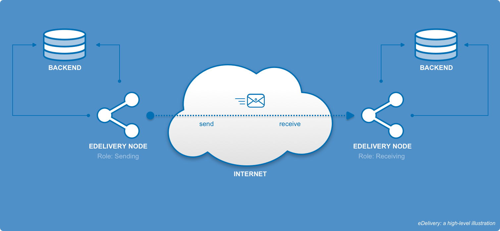

Any Policy Domain of the EU (Justice, Procurement, Consumer Protection, etc.) in need of secure, reliable, cross-border and cross-sector exchange of documents and data, can use the technical specification prescribed by the eDelivery DSI.
1. Introduction to eDelivery

Any Policy Domain of the EU (Justice, Procurement, Consumer Protection, etc.) in need of secure, reliable, cross-border and cross-sector exchange of documents and data (structured, non-structured and/or binary), can use the technical specification prescribed by the eDelivery DSI.
These have been developed by international Standards Developing Organizations (SDOs) such as OASIS and ETSI and selected by the Large Scale Pilots (LSPs). Additionally, these are aligned with the legal and organisational principles of eIDAS. This strategic decision aims at the adoption of eDelivery’s technical specifications by the software industry at large and not only by public authorities.
eDelivery is a network of nodes for digital communications. It is based on a distributed model where every participant becomes a node using standard transport protocols and security policies.
eDelivery helps public administrations to exchange electronic data and documents with other public administrations, businesses and citizens, in an interoperable, secure, reliable and trusted way.
eDelivery is one of the building blocks of the European Commission’s Connecting Europe Facility (CEF). These building blocks are reusable specifications, software and services that will form part of a wide variety of IT systems in different policy domains of the EU.
The CEF eDelivery building block is based on the AS4 messaging protocol, open and free for all, developed by the OASIS standards development organisation. To ease its adoption in Europe, eDelivery uses the AS4 implementation guidelines defined by the Member States in the e-SENS Large Scale Pilot. Organisations must install an Access Point, or use a Service Provider, to exchange information with the AS4 messaging protocol.
2. Who is eDelivery for
Policy domain owners involved in the roll out of EU or national policies that require the secure exchange of documents and data are the main target of the services of eDelivery DSI.
By adopting eDelivery, these actors make sure that Public Administrations can exchange any type of data and documents across borders. This means enabling Administration to Administration communication (A2A) contributing to the creation of an European single market which is fit for the digital age.
eDelivery can also be used in Administration to Business (A2B) and Business to Administration (B2A) scenarios, as proven by the PEPPOL implementation of eDelivery in the eProcurement domain.
It can also enable the interconnection of Public Administrations with Citizens (A2C and C2A) when adopted in the development of webportals. For example, eDelivery enables the eJustice portal to talk with other information systems. Communications between citizens (C2C) is out of scope of eDelivery.
The eDelivery DSI is also appealing for service and software vendors in the eDelivery domain. These actors can benefit form the CEF eDelivery services when upgrading their solutions to become conformant with the technical specifications.
3. eDelivery Use cases
eDelivery has the following Use Cases:
-
Message exchange
-
Trust Establishment
-
Dynamic Service Location
-
Capability Lookup
-
Backend Integration
These Use Cases are domain-neutral as eDelivery can be used for the exchange of any type of document and data.
As an example, the first use case refers to a generic 'Message Exchange' instead of 'Invoices Exchange' or 'Claims Exchange'. The exchange of invoices or claims are domain-specific Use Cases and are examples specializations of the 'Message Exchange' Use Case. eDelivery is an enabler of a wide variety of services which will exchange specific types of documents and data, below are a few examples.
4. How does eDelivery work?
The CEF eDelivery Building Block helps users to exchange electronic data and documents with one another in a reliable and trusted way.
The CEF eDelivery solution is based on a distributed model called the “4-corner model”. In this model, the back-end systems of the users don’t exchange data directly with each other but do this through Access Points. These Access Points are conformant to the same technical specifications and therefore capable of communicating with each other.
As a result of this, users adopting CEF eDelivery can easily and safely exchange data even if their IT systems were developed independently from each other.
5. Message exchange patterns
The following paragraphs summarize some key concepts and terminology defined in the ebMS 3.0 core specification [EBMS3]:
-
Messaging Service Handler (MSH), Producer, Consumer. An MSH is an entity that is able to generate or process messages that conform to the ebMS specification, and to act as sender or receiver. A Producer is an entity (e.g. application) that interacts with a Sending MSH (i.e. an MSH in the Sending role) to initiate the sending of a user message. A Consumer is an entity that interacts with a Receiving MSH (i.e. an MSH in the Receiving role) to consume data from a received user message.
-
Message, User Message, Signal Message. A Message is a logical unit which consists of User Messages or Signal Messages or both. A User Message is a message that contains a User Message unit (an eb:Messaging/eb:UserMessage XML structure). A Signal Message is an ebMS message that contains a Signal Message unit (an eb:Messaging/eb:SignalMessage XML structure). In other words, there exist two types of messages in the ebMS specification: the first type allows transmitting data interpreted by a Consumer and the second type allows transmitting data interpreted by an MSH as a signal (e.g. a pull signal, receipt or error).
-
Message Exchange Pattern (MEP), One-Way/Push, One-Way/Pull, Two-Way/Sync MEP. An MEP is an agreement between sending and receiving MSHs. One-Way/Push, One-Way/Pull and Two-Way/Sync MEPs describe agreements between MSHs. Some aspects of MEPs supported in the messaging layer include:
-
Specifying the correlation between messages sent and received in the message header.
-
Message binding to the underlying transfer-protocol.
-
-
Processing Mode (P-Mode) - A P-Mode is the contextual information that governs the processing of a particular message (thus is basically a set of configuration parameters). The P-Mode associated with a message determines, among other things, which security and/or which reliability protocol and parameters, as well as which MEP is being used when sending a message. The technical representation of the P-Mode configuration is implementation-dependent.
The Messaging Model of the AS4 profile constrains the channel bindings of message exchanges between two AS4 MSHs. The following diagram shows the AS4 Messaging Model, various actors and operations in message exchange:
Business applications or middleware, acting as Producer, Submit message content and metadata to the Sending MSH, which packages this content and Sends it to the Receiving MSH of the business partner, which Receives it and in turn Delivers the message to another business application or middleware that Consumes the message. Subject to configuration, Sending and Receiving MSH may Notify Producer or Consumer of particular events. Note that there is a difference between Sender and Initiator. For Push exchanges, the Sending MSH initiates the transmission of the message. For Pull exchanges (not supported in the eDelivery Common Profile), the transmission is initiated by the Receiving MSH. Also note that a business application can include MSH functionality, leaving the MSH as an abstract concept.
The concepts of Producer, Sender, Receiver and Consumer are separate from, and are not to be confused with, the corners in the Four Corner Topology concept (see section 4.1). While separate components, the Message Producer and Sending MSH entities MAY be enterprise-internal components only and MAY not be associated with different communication, business or legal identities. Sending and Receiving MSH are messaging endpoints, not intermediaries.
Different Message Producers MAY share a single Sending MSH and a single Receiving MSH MAY serve different Message Consumers and provide message routing functionality, using message metadata or payload content as routing delivery criteria. For example, different values of the AS4 eb:Service header could be used to select a specific Consumer. Specification of this functionality is out of scope for this specification.
A single MSH is said to be multi-tenant if it MAY be configured to send messages on behalf of multiple sender entities or to receive messages on behalf of multiple receiver entities using distinct identities, each possibly associated with distinct processing mode configurations including different party identifiers, certificates and endpoint URLs. Implementation and configuration of this feature is implementation-dependent.
The AS4 ebHandler Conformance Profile is the AS4 conformance profile that provides support for Sending and Receiving roles using Push channel bindings. Support is required for the following Message Exchange Patterns:
-
One Way / Push
-
Two Way / Push-and-Push
In the context of ebMS message exchanges, pushing means that the sender initiates the message exchange. For HTTP, this implies that the Sending MSH is acting as an HTTP client, and the Receiving MSH as an HTTP server. Pulling means that the receiver initiates the message exchange. For HTTP, in that situation the Receiver MSH is an HTTP client and the Sending MSH is an HTTP server.
The One-Way/Push MEP specifies a situation when a Sending MSH which has agreed to use the One-Way/Push MEP sends a message to a Receiving MSH which has agreed to use One-Way/Push MEP as well. After the successful reception of the message, the receiving MSH returns a non-user message (i.e. a signal message) to the sending MSH to confirm the reception. Different user messages do not have any reference to each other, except possibly if they are part of the same conversation.
While thef AS4 ebHandler does not require support for the Two-Way MEP, support for this MEP is REQUIRED in this eDelivery Common Profile. It can be used for business processes involving correlated pairs of request and response messages. A message handler that supports Two Way MEPs allows the Producer submitting a response user message unit to set the optional eb:RefToMessageId element in the eb:MessageInfo section to identify the corresponding request user message unit.
For further deails, see: https://ec.europa.eu/cefdigital/wiki/display/CEFDIGITAL/eDelivery+AS4+-+1.14
6. eDelivery AS4 profile ver. 1.14
The AS4 messaging protocol is used between corners 2 and 3 of the "4-corner model".
The eDelivery AS4 Profile is a modular profile of the ebMS3 and AS4 OASIS specifications. Its core is a mandatory Common Profile that selects, extends and profiles the AS4 ebHandler Conformance Profile and AS4 Additional Features and provides a common Usage Profile. This Common Profile can be implemented using open source or closed source AS4 software implementations. It is aligned with, and corresponds to a subset of, the AS4 profile for TSOs (Transmission System Operators) developed by ENTSOG (the European Network of Transmission System Operators for Gas).
In addition to the Common Profile, this specification provides a number of optional Profile Enhancement modules that specify functionality enhancements covering AS4 message exchange in four corner topologies, the use of AS4 in conjunction with the UN/CEFACT Standard Business Document Header (SBDH) specification, Dynamic Receiver and Dynamic Sender behavior and support for the Pull feature.
| Functionality | ebMS 3.0 AS4 |
|---|---|
Core Messaging |
Web Services |
Exchange Pattern Bindings |
Push, Pull and Sync (*) |
Exchange Patterns |
One Way or Two Way (*) |
Internet TransportHTTP 1.1 |
Message and Payload Packaging |
SOAP 1.2 with attachments |
Message Confidentiality |
WS-Security 1.1 using XML Encryption |
Message Correlation |
ebMS 3.0 "RefToMessageId" and "ConversationId" |
Message Identification |
ebMS 3.0 "MessageId" |
Message Timestamp |
ebMS 3.0 "Timestamp" and WS-Security "Timestamp" |
Non-Repudiation of Origin |
WS-Security 1.1 using XML Signature |
Non-Repudiation of Receipt |
Signed Receipt Signal Message |
Party Identification |
ebMS 3.0 "From" and "To" party identifiers. |
Payload Compression |
Gzip (**) |
Reliable Message |
AS4 reception awareness feature for lightweight, interoperable reliable messaging (**) |
Routing and Dispatching, SOA integration |
Mandatory "Service" and "Action" header elements |
Transport Layer Integrity, Sender Authentication, Receiver Authentication and Message Confidentiality (Non-Persistent) |
Also see:
7. Benefits of the eDelivery AS4 profile
The AS4 technical specification [AS4] defines a secure and reliable messaging protocol. It can be used for message exchange in Business-to-Business (B2B), Administration-to-Administration (A2A), Administration-to-Business (A2B) and Business-to-Administration (B2A) contexts. AS4 messages can carry any number of payloads. Payloads may be structured or unstructured documents or data.
Message packaging provided by AS4 as an add-on feature relies on ebMS 3.0 [EBMS3] support for the SOAP 1.2 specification [SOAP12]. AS4 combines the traditional functional support of payload compression in line with ebMS 3.0 message packaging norms. Compression in AS4, if used, must be applied prior to the application of any message-level security such as digital signing or encryption. AS4 does not define a maximum message size, though implementations will have practical limits based on available memory, disk or database storage etc.
AS4 offers a secure exchange protocol for use over the Internet that leverages the MIME envelope structure to transport arbitrary payloads. Support for Message Security is provided by AS4 via ebMS 3.0 and the WS-Security 1.1 and 1.1.1. specifications. This includes combinations of XML Digital Signature and XML Encryption X.509 security tokens for signing and encrypting as primary means for authenticating messages, ensuring privacy, and guaranteeing safe data transmission. Additionally, AS4 supports the use username/password tokens as access control to message pull channels.
The ebMS 3.0 and AS4 specifications provide support for Non-Repudiation of Receipt (NRR) by using a Signed Receipt Signal Message. The receipt is returned using a special signal message. Signal messages may also contain error handling information if there was some problem with the exchange.
AS4 makes use of the message receipt as a signal to the original message sender that the business payload (or payloads) has (have) been received. AS4 supports duplicate message detection and message retry/resending scenarios for when receipts for messages are not received by the sender.
Other technical highlights are:
-
Payload agnosticism: document or data types (e.g. purchase order, invoice, XML, PDF etc.) are not tied to any defined SOAP action or operation;
-
Support for single or multiple payloads contained either within the SOAP body or as SOAP (MIME) attachment(s);
-
Support for the ebMS 3.0 One-Way/Push message exchange pattern with support for either synchronous or asynchronous signal responses;
-
Support for the ebMS 3.0 One-Way/Pull message exchange pattern, which is beneficial for exchanges with non-addressable endpoints;
-
Reception Awareness features and Duplicate Detection capabilities make use of the eb:Receipt as the sole type of acknowledgment.
Note that this version of this eDelivery AS4 specification does not use all features of ebMS3 and AS4. Specifically, it does not use the Pull pattern. Future versions of this profile may require additional support for Pull or other additional features not currently included. For a complete feature list, see section 3.2.
8. eDelivery Services for getting started with eDelivery
Ready to start re-using the CEF eDelivery building block?
You can build and test your own components according to the specifications of CEF eDelivery, you can buy a product(s) that implements these specifications for you, or you can reuse the CEF eDelivery sample software.
Regardless of which option you choose, CEF offers a service package that helps you comply with European standards and technical specifications. It includes software, services, documentation and tools helping you to test, deploy and operate the building block.
For building your own components, the technical specifications and testing services sections will be particularly relevant. For buying a product or reusing the sample software, the software sections will be most relevant.
Generic terms and conditions, that apply to all services offered by the CEF Building Blocks, are defined in the Master Service Arrangement (MSA). Specific Service Level Arrangements (SLA) can apply to individual services.
Also see: